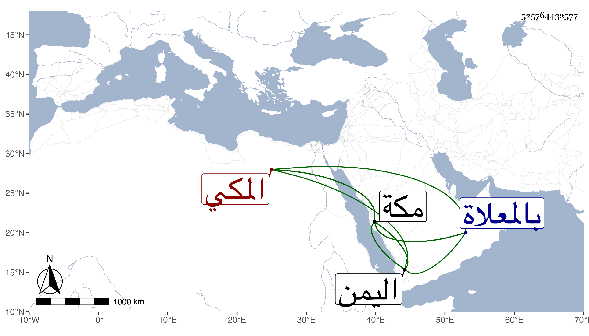

0902Sakhawi.DawLamic.ITO20230111-ara1.EIS1600.525764432577
Biography ID: 525764432577
219
عبد الله بن محمد بن علي بن عثمان العفيف أبو محمد بن الجمال الإصبهاني الأصل المكي ويعرف بالعجمي . ولد سنة اثنتين وستين وسبعمائة بمكة وسمع بها من الجمال بن عبد المعطي بعض ابن حبان وصحب بمكة وباليمن جمعا من الصالحين كأحمد الحرضي بأبيات حسين وأصحابه وكان يذاكر بكثير من حكايات الصالحين وبمسائل من الفقه وعانى التجارة ولم يرزق حظا فيها مع مروءة وأكرام لوافد هدة بني جابر من أعمال مكة لكونه كان له ملك بالجميزة منها فكان يقيم به في زمن الصيف كثيرا . مات في جمادى الأولى سنة سبع وعشرين بمكة ودفن بالمعلاة رحمه الله . ذكره التقي بن فهد في معجمه وقال الفاسي في نسيم ابنة أبي اليمن الطبري أنه تزوجها وولدت له عدة أولاد ، ومات بعدها بأيام في سنة موتها .
